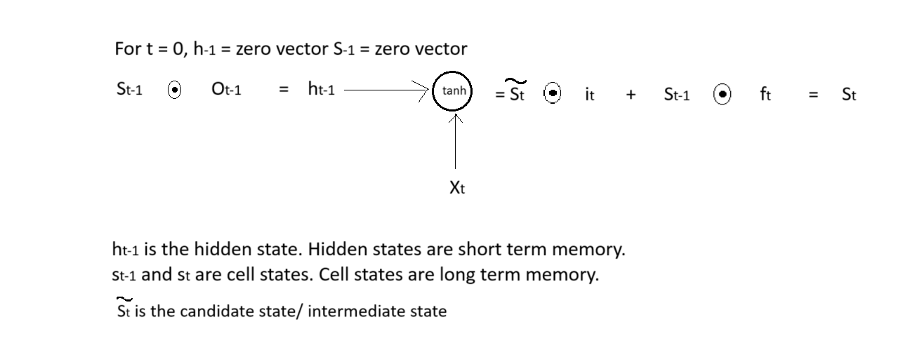

import torch
import numpy as np
from tqdm import tqdmThrough this notebook, we can easily understand how input gate, output gate, forget gate work in LSTM and how forward propagation and backward propagation happen through various gates in a recurrent neural network.
cell_state = torch.arange(start = 0, end = 5).reshape((1,5))
hidden_state = torch.arange(start = 10, end = 15).reshape((1,5))
input_gate = torch.arange(start = 0, end = 10).reshape((5,2))
forget_gate = torch.arange(start = 10, end = 20).reshape((5,2))concatenated_input = torch.concatenate([hidden_state, cell_state], axis = 1)
concatenated_weights = torch.concatenate([input_gate, forget_gate], axis = 0)concatenated_input@concatenated_weightstensor([[420, 490]])cell_state@forget_gate + hidden_state@input_gatetensor([[420, 490]])def oneHotEncode(data, num_chars, chr_to_idx):
all_one_hots = []
for chr in data:
onehot = np.zeros((num_chars,1))
idx = chr_to_idx[chr]
onehot[idx] = 1
all_one_hots.append(onehot)
return all_one_hotsXavier initialisation
Uniform xavier initialisation
draw weight from a random uniform distribution [-x, x]
x = sqrt(6/(input_size + output_size))
def initWeights(input_size, output_size): # input size = hidden size, output size = hidden size + num_of_unique_chars
x = np.sqrt(6 / (input_size + output_size))
w = np.random.uniform(low = -x, high = x, size = (input_size, output_size))
return w
def sigmoid(input):
input = np.clip(input, 1e-5, 1e5)
sig_out = 1 / (1 + np.exp(-input))
return sig_out
def tanh(input):
# num = np.exp(input) - np.exp(-input)
# denom = np.exp(input) + np.exp(-input)
# return num/denom
return np.tanh(input)
def derivative_sigmoid(input):
return input*(1 - input)
def derivative_tanh(input):
return 1 - (input**2)
def softmax(input):
return np.exp(input)/ sum(np.exp(input))
class LSTM():
def __init__(self, input_size, hidden_size, output_size, learning_rate, num_epochs):
self.learning_rate = learning_rate
self.num_epochs = num_epochs
self.input_size = input_size
self.hidden_size = hidden_size
# forget gate weights(it is multiplied with the cell state t-1)
self.wf = initWeights(hidden_size, input_size)
self.bf = initWeights(hidden_size, 1)
# input gate weights
self.wi = initWeights(hidden_size, input_size)
self.bi = initWeights(hidden_size, 1)
# output gate weights
self.wo = initWeights(hidden_size, input_size)
self.bo = initWeights(hidden_size, 1)
# candidate gate weights
self.wc = initWeights(hidden_size, input_size)
self.bc = initWeights(hidden_size, 1)
# final layer weights
self.wy = initWeights(output_size, hidden_size)
self.by = initWeights(output_size, 1)
def reset(self):
self.hidden_state = {-1: np.zeros((self.hidden_size, 1))}
self.cell_state = {-1: np.zeros((self.hidden_size, 1))}
self.concatenated_input = {}
self.forget_gate = {}
self.input_gate = {}
self.output_gate = {}
self.intermediate_cell_state = {}
def forward(self, inputs):
self.reset()
output = []
for idx in range(len(inputs)):
self.concatenated_input[idx] = np.concatenate([self.hidden_state[idx - 1], inputs[idx]]) # shape of concatenated input: (hidden_size + char_size, 1)
self.forget_gate[idx] = sigmoid(self.wf@self.concatenated_input[idx] + self.bf) # shape of forget gate: (hidden_size, 1)
self.input_gate[idx] = sigmoid(self.wi@self.concatenated_input[idx] + self.bi) # shape of input gate: (hidden_size, 1)
self.output_gate[idx] = sigmoid(self.wo@self.concatenated_input[idx] + self.bo) # shape of output gate: (hidden_size, 1)
self.intermediate_cell_state[idx] = tanh(self.wc@self.concatenated_input[idx] + self.bc) # shape of intermediate cell state: (hidden_size, 1)
self.cell_state[idx] = (np.multiply(self.intermediate_cell_state[idx], self.input_gate[idx]) + np.multiply(self.cell_state[idx - 1], self.forget_gate[idx])) # shape of cell state: (hidden size, 1)
self.hidden_state[idx] = np.multiply(tanh(self.cell_state[idx]), self.output_gate[idx]) # shape of hidden state: (hidden_size, 1)
output += [self.wy @ self.hidden_state[idx] + self.by] # The final output is computed from the hidden state
# shape of output: (char_size, 1)
return output
def train(self, inputs, labels, chr_to_idx):
for _ in tqdm(range(self.num_epochs)):
outputs = self.forward(inputs)
errors = []
for idx in range(len(outputs)):
errors += [softmax(outputs[idx])]
errors[-1][chr_to_idx[labels[idx]]] -= 1 # Here we compute (y_hat - 1) which is the gradient of loss with respect to z where y_hat = softmax(z)
self.backward(errors, outputs)
def backward(self, errors, outputs):
d_wy, d_by = 0, 0
d_wo, d_bo = 0, 0
d_wc, d_bc = 0, 0
d_wi, d_bi = 0, 0
d_wf, d_bf = 0, 0
dh_next, dc_next = np.zeros((self.hidden_size, 1)), np.zeros((self.hidden_size, 1))
for idx in range(len(outputs) - 1, 0, -1):
# gradient wrt final gate
d_wy += errors[idx] @ self.hidden_state[idx].T # shape of error: (char_size, 1), shape of hidden_state: (hidden_size, 1), shape of wy: (char_size, hidden_size)
d_by += errors[idx] # shape of d_by: (char_size, 1)
# gradient wrt hidden state
d_h = self.wy.T @ errors[idx] + dh_next # shape of error: (char_size, 1), shape of wy (char_size, hidden_size) shape of d_h: (hidden_size, 1)
# gradient wrt output gate
d_o = tanh(self.cell_state[idx]) * derivative_sigmoid(self.output_gate[idx]) * d_h # shape of cell state: (hidden_size, 1), shape of output gate: (hidden_size, 1) shape of d_o: (hidden_size, 1)
d_wo += d_o @ self.concatenated_input[idx].T # shape of concatenated_input: (char_size + hidden_size, 1), shape of d_o: (hidden_size, 1), shape of w_o: (hidden_size, char_size + hidden_size), shape of d_wo: (hidden_size, char_size + hidden_size)
d_bo += d_o # shape of d_bo: (hidden_size, 1)
# gradient wrt cell state
d_cs = self.output_gate[idx] * derivative_tanh(tanh(self.cell_state[idx])) * d_h + dc_next # shape of output gate: (hidden_size, 1), shape of cell_state: (hidden_size, 1), shape of d_h: (hidden_size, 1), shape of d_cs: (hidden_size, 1)
# gradient wrt candidate gate
d_candidate = self.input_gate[idx] * derivative_tanh(self.intermediate_cell_state[idx]) * d_cs # shape of input gate: (hidden_size, 1), shape of intermediate_cell_state: (hidden_size, 1), shape of d_cs: (hidden_size, 1), shape of d_candidate: (hidden_size, 1)
d_wc += d_candidate @ self.concatenated_input[idx].T # shape of concatenated_input: (char_size + hidden_size, 1), shape of d_candidate: (hidden_size, 1), shape of d_wc: (hidden_size, hidden_size + char_size)
d_bc += d_candidate # shape of d_candidate: (hidden_size, 1), shape of d_bc: (hidden_size, 1)
# gradient wrt input gate
d_i = self.intermediate_cell_state[idx] * derivative_sigmoid(self.input_gate[idx]) * d_cs # shape of intermediate_cell_state: (hidden_size, 1), shape of input_gate: (hidden_size, 1), shape of d_cs: (hidden_size, 1), shape of d_i: (hidden_size, 1)
d_wi += d_i @ self.concatenated_input[idx].T # shape of concatenated_input: (hidden_size+ chr_size, 1), shape of d_i: (hidden_size, 1), shape of d_wi; (hidden_size, hidden_size+ chr_size)
d_bi += d_i # shape of d_i: (hidden_size, 1), shape of d_bi: (hidden_size, 1)
# gradient wrt forget gate
d_f = self.cell_state[idx-1] * derivative_sigmoid(self.forget_gate[idx]) * d_cs # shape of cell state: (hidden_size, 1), shape of forget gate: (hidden_size, 1), shape of d_cs: (hidden_size, 1)
d_wf += d_f @ self.concatenated_input[idx].T # shape of concatenated_input: (hidden_size+ chr_size, 1), shape of d_f: (hidden_size, 1), shape of d_wf: (hidden_size, hidden_size+ chr_size)
d_bf += d_f # shape of d_f: (hidden_size, 1), shape of d_bf: (hidden_size, 1)
# gradient wrt concatenated input error
d_z = self.wf.T @ d_f + self.wi.T @ d_i + self.wo.T @ d_o + self.wc.T @ d_cs # shape of d_z: (hidden_size + chr_size , 1)
# gradient wrt hidden state at next time step
dh_next = d_z[: self.hidden_size, :]
# gradient wrt cell states at next time step
dc_next = self.forget_gate[idx]*d_cs
for x in (d_wy, d_by, d_wf, d_bf, d_wc, d_bc, d_wi, d_bi, d_wo, d_bo):
x = np.clip(x, -1, 1)
self.wf = self.wf - self.learning_rate * d_wf
self.bf = self.bf - self.learning_rate * d_bf
self.wi = self.wi - self.learning_rate * d_wi
self.bi = self.bi - self.learning_rate * d_bi
self.wo = self.wo - self.learning_rate * d_wo
self.bo = self.bo - self.learning_rate * d_bo
self.wc = self.wc - self.learning_rate * d_wc
self.bc = self.bc - self.learning_rate * d_bc
self.wy = self.wy - self.learning_rate * d_wy
self.by = self.by - self.learning_rate * d_by
def inference(self, input, idx_to_chr):
outputs = self.forward(input)
characters = ''
for output in outputs:
probs = softmax(output)
idx = np.argmax(probs)
# print(idx)
characters += (idx_to_chr[idx])
return characters##### Data #####
data = """To be, or not to be, that is the question: Whether \
'tis nobler in the mind to suffer The slings and arrows of ou\
trageous fortune, Or to take arms against a sea of troubles A\
nd by opposing end them. To die—to sleep, No more; and by a s\
leep to say we end The heart-ache and the thousand natural sh\
ocks That flesh is heir to: 'tis a consummation Devoutly to b\
e wish'd. To die, to sleep; To sleep, perchance to dream—ay, \
there's the rub: For in that sleep of death what dreams may c\
ome, When we have shuffled off this mortal coil, Must give us\
pause—there's the respect That makes calamity of so long lif\
e. For who would bear the whips and scorns of time, Th'oppres\
sor's wrong, the proud man's contumely, The pangs of dispriz'\
d love, the law's delay, The insolence of office, and the spu\
rns That patient merit of th'unworthy takes, When he himself \
might his quietus make""".lower()
chars = set(data)
num_chars = len(chars)
chr_to_idx = {c: i for i, c in enumerate(chars)}
idx_to_chr = {i: c for i, c in enumerate(chars)}
trainX, trainY = data[:-1], data[1:]
char_size = len(chars)
print(f'Unique characters {char_size}, total training inputs {len(trainX)}')
hidden_size = 10
learning_rate, num_epochs = 0.01, 1000
trainX = oneHotEncode(trainX, num_chars, chr_to_idx)
lstm = LSTM(char_size + hidden_size, hidden_size, char_size, learning_rate, num_epochs)Unique characters 32, total training inputs 865outputs = lstm.forward(trainX)
len(outputs[0])32len(outputs)865lstm.train(trainX, trainY, chr_to_idx) 3%|▎ | 28/1000 [00:04<02:23, 6.78it/s]C:\Users\Hp\AppData\Local\Temp\ipykernel_13924\2832247213.py:117: RuntimeWarning: overflow encountered in matmul
d_z = self.wf.T @ d_f + self.wi.T @ d_i + self.wo.T @ d_o + self.wc.T @ d_cs # shape of d_z: (hidden_size + chr_size , 1)
C:\Users\Hp\AppData\Local\Temp\ipykernel_13924\2832247213.py:117: RuntimeWarning: overflow encountered in add
d_z = self.wf.T @ d_f + self.wi.T @ d_i + self.wo.T @ d_o + self.wc.T @ d_cs # shape of d_z: (hidden_size + chr_size , 1)
C:\Users\Hp\AppData\Local\Temp\ipykernel_13924\2832247213.py:117: RuntimeWarning: invalid value encountered in add
d_z = self.wf.T @ d_f + self.wi.T @ d_i + self.wo.T @ d_o + self.wc.T @ d_cs # shape of d_z: (hidden_size + chr_size , 1)
C:\Users\Hp\AppData\Local\Temp\ipykernel_13924\2832247213.py:94: RuntimeWarning: invalid value encountered in multiply
d_o = tanh(self.cell_state[idx]) * derivative_sigmoid(self.output_gate[idx]) * d_h # shape of cell state: (hidden_size, 1), shape of output gate: (hidden_size, 1) shape of d_o: (hidden_size, 1)
C:\Users\Hp\AppData\Local\Temp\ipykernel_13924\2832247213.py:95: RuntimeWarning: invalid value encountered in matmul
d_wo += d_o @ self.concatenated_input[idx].T # shape of concatenated_input: (char_size + hidden_size, 1), shape of d_o: (hidden_size, 1), shape of w_o: (hidden_size, char_size + hidden_size), shape of d_wo: (hidden_size, char_size + hidden_size)
C:\Users\Hp\AppData\Local\Temp\ipykernel_13924\2832247213.py:99: RuntimeWarning: invalid value encountered in multiply
d_cs = self.output_gate[idx] * derivative_tanh(tanh(self.cell_state[idx])) * d_h + dc_next # shape of output gate: (hidden_size, 1), shape of cell_state: (hidden_size, 1), shape of d_h: (hidden_size, 1), shape of d_cs: (hidden_size, 1)
C:\Users\Hp\AppData\Local\Temp\ipykernel_13924\2832247213.py:102: RuntimeWarning: invalid value encountered in multiply
d_candidate = self.input_gate[idx] * derivative_tanh(self.intermediate_cell_state[idx]) * d_cs # shape of input gate: (hidden_size, 1), shape of intermediate_cell_state: (hidden_size, 1), shape of d_cs: (hidden_size, 1), shape of d_candidate: (hidden_size, 1)
C:\Users\Hp\AppData\Local\Temp\ipykernel_13924\2832247213.py:107: RuntimeWarning: invalid value encountered in multiply
d_i = self.intermediate_cell_state[idx] * derivative_sigmoid(self.input_gate[idx]) * d_cs # shape of intermediate_cell_state: (hidden_size, 1), shape of input_gate: (hidden_size, 1), shape of d_cs: (hidden_size, 1), shape of d_i: (hidden_size, 1)
C:\Users\Hp\AppData\Local\Temp\ipykernel_13924\2832247213.py:108: RuntimeWarning: invalid value encountered in matmul
d_wi += d_i @ self.concatenated_input[idx].T # shape of concatenated_input: (hidden_size+ chr_size, 1), shape of d_i: (hidden_size, 1), shape of d_wi; (hidden_size, hidden_size+ chr_size)
C:\Users\Hp\AppData\Local\Temp\ipykernel_13924\2832247213.py:112: RuntimeWarning: invalid value encountered in multiply
d_f = self.cell_state[idx-1] * derivative_sigmoid(self.forget_gate[idx]) * d_cs # shape of cell state: (hidden_size, 1), shape of forget gate: (hidden_size, 1), shape of d_cs: (hidden_size, 1)
C:\Users\Hp\AppData\Local\Temp\ipykernel_13924\2832247213.py:113: RuntimeWarning: invalid value encountered in matmul
d_wf += d_f @ self.concatenated_input[idx].T # shape of concatenated_input: (hidden_size+ chr_size, 1), shape of d_f: (hidden_size, 1), shape of d_wf: (hidden_size, hidden_size+ chr_size)
100%|██████████| 1000/1000 [02:25<00:00, 6.88it/s]output = lstm.inference(trainX, idx_to_chr)
print(output)
len(output):::::::::::::::::::::::::::::::::::::::::::::::::::::::::::::::::::::::::::::::::::::::::::::::::::::::::::::::::::::::::::::::::::::::::::::::::::::::::::::::::::::::::::::::::::::::::::::::::::::::::::::::::::::::::::::::::::::::::::::::::::::::::::::::::::::::::::::::::::::::::::::::::::::::::::::::::::::::::::::::::::::::::::::::::::::::::::::::::::::::::::::::::::::::::::::::::::::::::::::::::::::::::::::::::::::::::::::::::::::::::::::::::::::::::::::::::::::::::::::::::::::::::::::::::::::::::::::::::::::::::::::::::::::::::::::::::::::::::::::::::::::::::::::::::::::::::::::::::::::::::::::::::::::::::::::::::::::::::::::::::::::::::::::::::::::::::::::::::::::::::::::::::::::::::::::::::::::::::::::::::::::::::::::::::::::::::::::::::::::::::::::::::::::::::::::::::::::::::::::::::::::::::::::::::::::::::::::::::::::::::::::::::::::::::::::::::865What is the error in case of LSTM?
Ans: outputs is a vector of size char_size
On applying softmax to the output vector, we get a tensor that contains probabilities.
We calculate the cross-entropy loss: \(-\sum{y_ilog\hat{y_i}}\) —- Please check here does cross entropy loss include negation or not
If input x at timestep t belongs to class \(l\) then \(y_l\) = 1 and cross-entropy loss \(L(\theta) = -log(\hat{y_l})\)
\(\frac{dL(\theta)}{d\hat{y_l}} = \frac{-1}{\hat{y_l}}\)
\(\hat{y} = softmax(z)\)
\(\hat{y} = (\hat{y_1}, \hat{y_2}, \hat{y_3}, .......... \hat{y_L})\) where L is number of unique characters
\(\frac{d\hat{y_l}}{dz} = 1_{i = l}*softmax(z_l) - softmax(z_l)softmax(z_i) = 1_{i=l}* \hat{y_l} - \hat{y_l}*\hat{y_i} = \hat{y_l} (1_{i = l} - \hat{y_i})\)
\(\frac{dL(\theta)}{dz} = \frac{-1}{\hat{y_l}} * \hat{y_l} (1_{i = l} - \hat{y_i}) = (\hat{y_i} - 1)\) This vector is of size L
References:
- https://github.com/CallMeTwitch/Neural-Network-Zoo/blob/main/LongShortTermMemoryNetwork.py